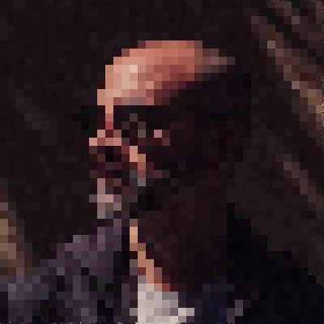

Sóc psicòleg especialista en salut mental i trastorns de conducta en persones amb discapacitat intel·lectual.Només la ciència i els valors progressistes ens salvaran.Cartomàgia a les mans, llum als ulls, píxels al cap.